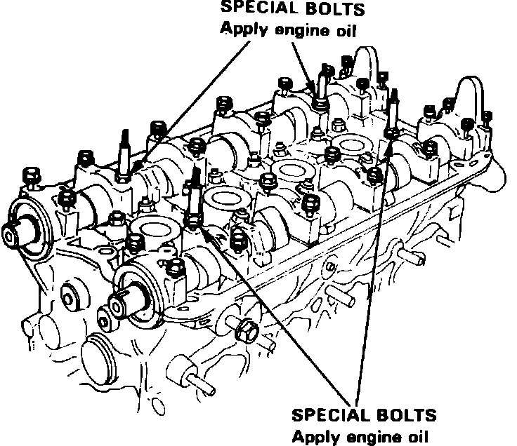
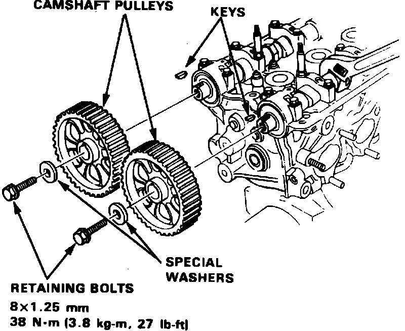

Rocker Arm Assembly: Service and Repair
Fig. 1 Relieving fuel system pressure:

1. Disconnect battery ground cable, drain cooling system, then position No. 1 cylinder at TDC compression stroke.
2. Disconnect air intake duct and vacuum hose, then remove air cleaner cover.
3. Relieve fuel system pressure by loosening the service bolt on top of fuel filter, Fig. 1, one complete revolution, then disconnect fuel lines from filter.
4. Remove engine secondary ground cable from valve cover.
5. Disconnect brake booster vacuum tube from intake manifold.
6. Loosen throttle cable locknut and adjusting nut, then slip cable end out of throttle bracket and accelerator linkage. Use care to avoid bending cable when removing it.
7. Disconnect ignition wires from spark plugs, then remove distributor assembly.
8. Disconnect vacuum lines from charcoal canister.
9. Disconnect No. 1 control box emission hoses from tubing manifold.
10. On models equipped with A/C, disconnect idle control solenoid hoses.
11. On all models, disconnect engine sub-harness connectors and couplers from cylinder head and intake manifold.
12. Disconnect oxygen sensor electrical connector.
13. Disconnect upper radiator hose, heater inlet hose and bypass inlet hose from cylinder head.
14. Remove coolant hose between thermostat housing and intake manifold.
15. Remove exhaust manifold and bracket attaching bolts, then the manifold.
16. Remove intake manifold and bracket attaching bolts.
17. Disconnect hose between intake manifold and breather chamber, then remove valve cover and upper timing belt cover.
18. Loosen timing belt tension bolt and remove the belt. Do not bend or crimp timing belt more than 90° or to less than 1 inch in diameter.
19. Remove timing belt lower cover attaching bolts from cylinder head.
20. Remove camshaft holder attaching bolts, then the camshaft holders, camshaft and rocker arms.
21. Install rocker arms and camshaft as follows:
a. Position rocker arms on pivot bolts and valve stems in their original positions.
b. Install camshafts and seals with open side facing in. Ensure keyways on camshafts are facing up.
Fig. 14 Camshaft holder installation. Integra:

c. Apply suitable sealant to cylinder head mating surfaces of Nos. 1 and 6 camshaft holders, then install and temporarily tighten all holders. Apply clean engine oil to bolts indicated in Fig. 14.
d. Install camshaft seals using a suitable driver.
e. Torque camshaft holder attaching bolts to 9 ft. lbs. Alternately tighten bolts two turns at a time to prevent rocker arms from binding on valves.
Fig. 15 Camshaft pulley installation. Integra:

f. Install camshaft keys and pulleys, Fig. 15.